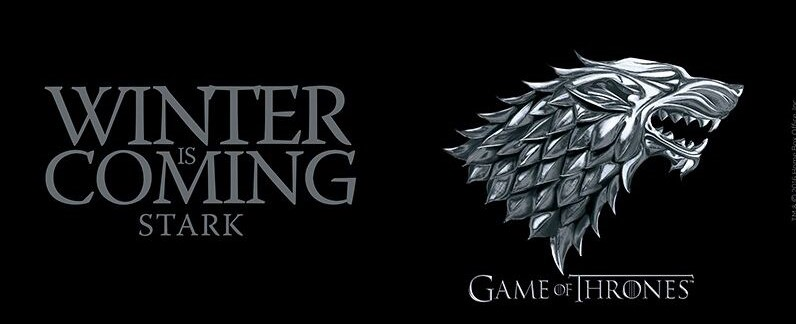

| 1 |
1 |
"Winter Is Coming"
|
Tim Van Patten |
David Benioff & D. B. Weiss |
April 17, 2011 |
2.22 |
| 2 |
2 |
"The Kingsroad"
|
Tim Van Patten |
David Benioff & D. B. Weiss |
April 24, 2011 |
2.20 |
| 3 |
3 |
"Lord Snow"
|
Brian Kirk |
David Benioff & D. B. Weiss |
May 1, 2011 |
2.44 |
| 4 |
4 |
"Cripples, Bastards, and Broken Things"
|
Brian Kirk |
Bryan Cogman |
May 8, 2011 |
2.45 |
| 5 |
5 |
"The Wolf and the Lion"
|
Brian Kirk |
David Benioff & D. B. Weiss |
May 15, 2011 |
2.58 |
| 6 |
6 |
"A Golden Crown"
|
Daniel Minahan |
Story by : David Benioff & D. B. Weiss
Teleplay by : Jane Espenson and David Benioff & D. B. Weiss |
May 22, 2011 |
2.44 |
| 7 |
7 |
"You Win or You Die"
|
Daniel Minahan |
David Benioff & D. B. Weiss |
May 29, 2011 |
2.40 |
| 8 |
8 |
"The Pointy End"
|
Daniel Minahan |
George R. R. Martin |
June 5, 2011 |
2.72 |
| 9 |
9 |
"Baelor"
|
Alan Taylor |
David Benioff & D. B. Weiss |
June 12, 2011 |
2.66 |
| 10 |
10 |
"Fire and Blood"
|
Alan Taylor |
David Benioff & D. B. Weiss |
June 19, 2011 |
3.04 |
|  |